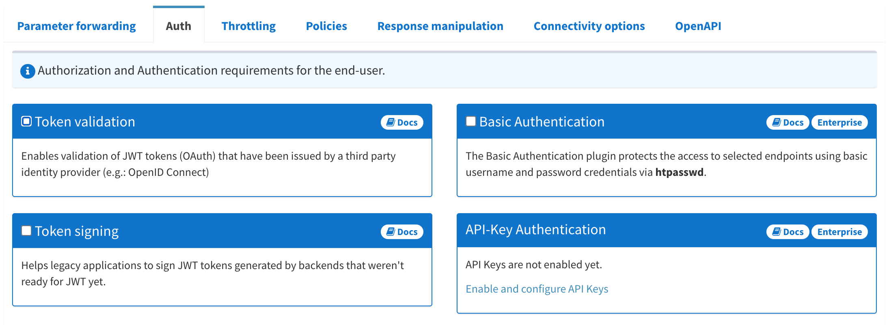
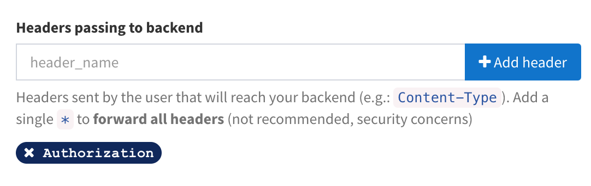
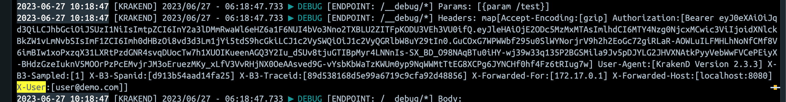
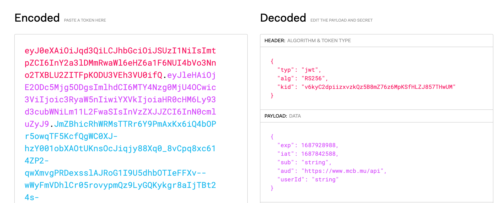

<!DOCTYPE html>


<html lang="en">
  

    <head>
      <meta charset="utf-8" />
       
      <meta name="keywords" content="agile, tdd, software engineering" />
       
      <meta
        name="viewport"
        content="width=device-width, initial-scale=1, maximum-scale=1"
      />
      <title>Authenticate the KrakenD! |  nick dot blog</title>
  <meta name="generator" content="hexo-theme-ayer">
      
      <link rel="shortcut icon" href="/favicon.ico" />
       
<link rel="stylesheet" href="/dist/main.css">

      
<link rel="stylesheet" href="/css/fonts/remixicon.css">

      
<link rel="stylesheet" href="/css/custom.css">
 
      <script src="https://cdn.staticfile.org/pace/1.2.4/pace.min.js"></script>
       
<!-- Global site tag (gtag.js) - Google Analytics -->
<script async src="https://www.googletagmanager.com/gtag/js?id=G-KXJW9BVBJ4"></script>
<script>
  window.dataLayer = window.dataLayer || [];
  function gtag(){dataLayer.push(arguments);}
  gtag('js', new Date());
  gtag('config', 'G-KXJW9BVBJ4');
</script>

 

      <link
        rel="stylesheet"
        href="https://cdn.jsdelivr.net/npm/@sweetalert2/theme-bulma@5.0.1/bulma.min.css"
      />
      <script src="https://cdn.jsdelivr.net/npm/sweetalert2@11.0.19/dist/sweetalert2.min.js"></script>

      <!-- mermaid -->
      
      <style>
        .swal2-styled.swal2-confirm {
          font-size: 1.6rem;
        }
      </style>
    <link rel="alternate" href="/atom.xml" title="nick dot blog" type="application/atom+xml">
</head>
  </html>
</html>


<body>
  <div id="app">
    
      
    <main class="content on">
      <section class="outer">
  <article
  id="post-kraken-auth"
  class="article article-type-post"
  itemscope
  itemprop="blogPost"
  data-scroll-reveal
>
  <div class="article-inner">
    
    <header class="article-header">
       
<h1 class="article-title sea-center" style="border-left:0" itemprop="name">
  Authenticate the KrakenD!
</h1>
 

      
    </header>
     
    <div class="article-meta">
      <a href="/2023/07/08/kraken-auth/" class="article-date">
  <time datetime="2023-07-08T03:04:50.000Z" itemprop="datePublished">2023-07-08</time>
</a> 
  <div class="article-category">
    <a class="article-category-link" href="/categories/Release-The-KrakenD/">Release The KrakenD</a>
  </div>
  
<div class="word_count">
    <span class="post-time">
        <span class="post-meta-item-icon">
            <i class="ri-quill-pen-line"></i>
            <span class="post-meta-item-text"> Word count:</span>
            <span class="post-count">802</span>
        </span>
    </span>

    <span class="post-time">
        &nbsp; | &nbsp;
        <span class="post-meta-item-icon">
            <i class="ri-book-open-line"></i>
            <span class="post-meta-item-text"> Reading time≈</span>
            <span class="post-count">5 min</span>
        </span>
    </span>
</div>
 
    </div>
      
    <div class="tocbot"></div>


  
    <div class="article-entry" itemprop="articleBody">
       
  <p>In a <a target="_blank" rel="noopener" href="https://nickmck.net/2023/06/23/release-the-krakend/">previous article</a> I described getting a minimal KrakenD installation up and running using a simple Node Backend. I also configured logging and tracing so that I could see what was happening. Today I’m going to explore some of KrakenD’s authentication capabilities.</p>
<h2 id="Setting-up-JWT-Authentication"><a href="#Setting-up-JWT-Authentication" class="headerlink" title="Setting up JWT Authentication"></a>Setting up JWT Authentication</h2><p>When you define an endpoint in KrakenD there are a number of options for controlling how requests are authenticated.</p>


<p>I want to use KrakenD to verify incoming JWT tokens. There are a number of advantages to this:</p>
<ul>
<li>By validating tokens early we ensure only valid, authenticated and authorized requests reach the backend service in the first place.</li>
<li>Load on the back-end is reduced.</li>
<li>Token Management and configuration is centralised.</li>
</ul>
<blockquote>
<p>Note this does not eliminate the need for backend service validation entirely. The API Gateway acts as a first line of defense, but the backend should still enforce its own security measures and validate requests for complete protection.</p>
</blockquote>
<p> Setting this up was <em>mostly</em> straightforward. The first thing I needed to do was to expose my keys as a <a target="_blank" rel="noopener" href="https://openid.net/specs/draft-jones-json-web-key-03.html">JWKS</a> endpoint. I did this using the <a target="_blank" rel="noopener" href="https://github.com/cisco/node-jose">node-jose</a> library for Node. If you’re interested in the details of this let me know in the comments.</p>
<p>Now when I hit my JWKS endpoint I get this:</p>
<figure class="highlight json"><table><tr><td class="gutter"><pre><span class="line">1</span><br><span class="line">2</span><br><span class="line">3</span><br><span class="line">4</span><br><span class="line">5</span><br><span class="line">6</span><br><span class="line">7</span><br><span class="line">8</span><br><span class="line">9</span><br><span class="line">10</span><br><span class="line">11</span><br><span class="line">12</span><br><span class="line">13</span><br></pre></td><td class="code"><pre><span class="line"></span><br><span class="line"><span class="punctuation">&#123;</span></span><br><span class="line">    <span class="attr">&quot;keys&quot;</span><span class="punctuation">:</span> <span class="punctuation">[</span></span><br><span class="line">    <span class="punctuation">&#123;</span></span><br><span class="line">    <span class="attr">&quot;kty&quot;</span><span class="punctuation">:</span> <span class="string">&quot;RSA&quot;</span><span class="punctuation">,</span></span><br><span class="line">    <span class="attr">&quot;kid&quot;</span><span class="punctuation">:</span> <span class="string">&quot;DATA&quot;</span><span class="punctuation">,</span></span><br><span class="line">    <span class="attr">&quot;use&quot;</span><span class="punctuation">:</span> <span class="string">&quot;sig&quot;</span><span class="punctuation">,</span></span><br><span class="line">    <span class="attr">&quot;alg&quot;</span><span class="punctuation">:</span> <span class="string">&quot;RS256&quot;</span><span class="punctuation">,</span></span><br><span class="line">    <span class="attr">&quot;e&quot;</span><span class="punctuation">:</span> <span class="string">&quot;DATA&quot;</span><span class="punctuation">,</span></span><br><span class="line">    <span class="attr">&quot;n&quot;</span><span class="punctuation">:</span> <span class="string">&quot;DATA&quot;</span></span><br><span class="line">    <span class="punctuation">&#125;</span><span class="punctuation">]</span></span><br><span class="line"><span class="punctuation">&#125;</span></span><br><span class="line"></span><br></pre></td></tr></table></figure>

<p>Next step is to connect KrakenD to my JWKS Endpoint. This is done by adding an auth&#x2F;validator to the Endpoint’s extra_config section:</p>
<figure class="highlight json"><table><tr><td class="gutter"><pre><span class="line">1</span><br><span class="line">2</span><br><span class="line">3</span><br><span class="line">4</span><br><span class="line">5</span><br><span class="line">6</span><br><span class="line">7</span><br><span class="line">8</span><br><span class="line">9</span><br></pre></td><td class="code"><pre><span class="line"></span><br><span class="line"><span class="attr">&quot;extra_config&quot;</span><span class="punctuation">:</span> <span class="punctuation">&#123;</span></span><br><span class="line">  <span class="attr">&quot;auth/validator&quot;</span><span class="punctuation">:</span> <span class="punctuation">&#123;</span></span><br><span class="line">    <span class="attr">&quot;alg&quot;</span><span class="punctuation">:</span> <span class="string">&quot;RS256&quot;</span><span class="punctuation">,</span></span><br><span class="line">    <span class="attr">&quot;jwk_url&quot;</span><span class="punctuation">:</span> <span class="string">&quot;https://MyEndPoint/jwks&quot;</span><span class="punctuation">,</span></span><br><span class="line">    <span class="attr">&quot;operation_debug&quot;</span><span class="punctuation">:</span> <span class="literal"><span class="keyword">true</span></span></span><br><span class="line">  <span class="punctuation">&#125;</span></span><br><span class="line"><span class="punctuation">&#125;</span></span><br><span class="line"></span><br></pre></td></tr></table></figure>

<p>That’s it. Incoming requests that provide a token are authenticated using the information in the JWKS.</p>
<p>There was one snag. I was receiving this error:</p>
<figure class="highlight plaintext"><table><tr><td class="gutter"><pre><span class="line">1</span><br></pre></td><td class="code"><pre><span class="line">▶ ERROR [ENDPOINT: /v1/atms][JWTValidator] Unable to validate the token: algorithm is invalid</span><br></pre></td></tr></table></figure>

<blockquote>
<p>If you run into trouble set the operation_debug property to true on the auth&#x2F;validator.</p>
</blockquote>
<p>This was curious because my tracing showed that my JWKS endpoint was not being hit at all. It turns out that this error can also happen if there are connectivity issues. The issue was that my containers were not talking to each other. I fixed this and all was fine.</p>
<h2 id="Parameter-Forwarding"><a href="#Parameter-Forwarding" class="headerlink" title="Parameter Forwarding"></a>Parameter Forwarding</h2>

<p>By default KrakenD will not automatically forward the Authorization header to the downstream system. To do this add ‘Authorization’ to the input_headers array of the endpoint.</p>
<h2 id="Authentication-Options"><a href="#Authentication-Options" class="headerlink" title="Authentication Options"></a>Authentication Options</h2><p>KrakenD allows a lot of flexibility in terms of how tokens are processed. You can test for specific Scopes, the Issuer, the Audience and specific roles. In addition you can cache results to improve performance for repeated validations. This is all done via the auth&#x2F;validator object. For example to constrain the audience to ‘<a target="_blank" rel="noopener" href="https://www.mcb.mu/api">https://www.mcb.mu/api</a>‘ and add caching:</p>
<figure class="highlight json"><table><tr><td class="gutter"><pre><span class="line">1</span><br><span class="line">2</span><br><span class="line">3</span><br><span class="line">4</span><br><span class="line">5</span><br><span class="line">6</span><br><span class="line">7</span><br><span class="line">8</span><br><span class="line">9</span><br><span class="line">10</span><br></pre></td><td class="code"><pre><span class="line"></span><br><span class="line"><span class="attr">&quot;extra_config&quot;</span><span class="punctuation">:</span> <span class="punctuation">&#123;</span></span><br><span class="line">  <span class="attr">&quot;auth/validator&quot;</span><span class="punctuation">:</span> <span class="punctuation">&#123;</span></span><br><span class="line">    <span class="attr">&quot;alg&quot;</span><span class="punctuation">:</span> <span class="string">&quot;RS256&quot;</span><span class="punctuation">,</span></span><br><span class="line">    <span class="attr">&quot;jwk_url&quot;</span><span class="punctuation">:</span> <span class="string">&quot;https://MyEndPoint/jwks&quot;</span><span class="punctuation">,</span></span><br><span class="line">    <span class="attr">&quot;audience&quot;</span><span class="punctuation">:</span> <span class="string">&quot;https://www.mcb.mu/api&quot;</span><span class="punctuation">,</span></span><br><span class="line">    <span class="attr">&quot;cache&quot;</span><span class="punctuation">:</span> <span class="literal"><span class="keyword">true</span></span></span><br><span class="line">  <span class="punctuation">&#125;</span></span><br><span class="line"><span class="punctuation">&#125;</span></span><br><span class="line"></span><br></pre></td></tr></table></figure>

<h2 id="Claim-Extraction"><a href="#Claim-Extraction" class="headerlink" title="Claim Extraction"></a>Claim Extraction</h2><p>KrakenD can extract claims from the token and use them in the requests made to downstream services. For example I would like to take my Subject claim and inject it as a HTTP Header with the key ‘x-user’.</p>
<p>This can be achieved via the propagate_claims property of the auth&#x2F;validator.</p>
<figure class="highlight json"><table><tr><td class="gutter"><pre><span class="line">1</span><br><span class="line">2</span><br><span class="line">3</span><br><span class="line">4</span><br><span class="line">5</span><br><span class="line">6</span><br><span class="line">7</span><br><span class="line">8</span><br><span class="line">9</span><br></pre></td><td class="code"><pre><span class="line"></span><br><span class="line"><span class="attr">&quot;extra_config&quot;</span><span class="punctuation">:</span> <span class="punctuation">&#123;</span></span><br><span class="line">  <span class="attr">&quot;auth/validator&quot;</span><span class="punctuation">:</span> <span class="punctuation">&#123;</span></span><br><span class="line">    <span class="attr">&quot;propagate_claims&quot;</span><span class="punctuation">:</span> <span class="punctuation">[</span></span><br><span class="line">      <span class="punctuation">[</span><span class="string">&quot;sub&quot;</span><span class="punctuation">,</span> <span class="string">&quot;x-user&quot;</span><span class="punctuation">]</span></span><br><span class="line">    <span class="punctuation">]</span></span><br><span class="line">  <span class="punctuation">&#125;</span></span><br><span class="line"><span class="punctuation">&#125;</span></span><br><span class="line"></span><br></pre></td></tr></table></figure>

<blockquote>
<p>Note you will also have to add the x-user header to the input_headers array otherwise KrakenD will block it.</p>
</blockquote>
<p>Here’s the result. Note the ‘x-user’ header in the debug trace.</p>


<h2 id="Debugging"><a href="#Debugging" class="headerlink" title="Debugging"></a>Debugging</h2><p>If it’s not working start by <a target="_blank" rel="noopener" href="https://jwt.io/">decoding</a> your token and ensuring that the claims and expiry dates are valid. </p>


<p>If that does not work KrakenD provides a __debug endpoint to help you figure out what’s going on. To use this:</p>
<ul>
<li>Set the debug_endpoint to ‘true’.</li>
<li>Set your log level to ‘DEBUG’. </li>
<li>Add a new backend that points to KrakenD as the Host and ‘&#x2F;__debug’ as the URL.</li>
</ul>
<p>With this in place KrakenD will log everything that is sent to the __debug endpoint so that you can see if anything is being filtered out or mismatched.</p>
<h2 id="Next-Steps"><a href="#Next-Steps" class="headerlink" title="Next Steps"></a>Next Steps</h2><p>The next thing I’d like to play with is seeing how I can shape the request and response messages as they pass through the gateway. For example seeing if I can get the gateway to filter out specific properties of fields with specific patterns. </p>
 
      <!-- reward -->
      
    </div>
    

    <!-- copyright -->
    
    <div class="declare">
      <ul class="post-copyright">
        <li>
          <i class="ri-copyright-line"></i>
          <strong>Copyright： </strong>
          
          Copyright is owned by the author. For commercial reprints, please contact the author for authorization. For non-commercial reprints, please indicate the source.
          
        </li>
      </ul>
    </div>
    
    <footer class="article-footer">
       
  <ul class="article-tag-list" itemprop="keywords"><li class="article-tag-list-item"><a class="article-tag-list-link" href="/tags/devops/" rel="tag">devops</a></li></ul>

    </footer>
  </div>

   
  <nav class="article-nav">
    
      <a href="/2023/07/16/krakend-response/" class="article-nav-link">
        <strong class="article-nav-caption">Previous Post</strong>
        <div class="article-nav-title">
          
            Request/Response Shaping with KrakenD
          
        </div>
      </a>
    
    
      <a href="/2023/07/01/adventures-in-facial-recognition/" class="article-nav-link">
        <strong class="article-nav-caption">Next Post</strong>
        <div class="article-nav-title">eKYC with Azure Face API &amp; Cognitive Services</div>
      </a>
    
  </nav>

  
   
<div class="gitalk" id="gitalk-container"></div>

<link rel="stylesheet" href="https://cdn.staticfile.org/gitalk/1.7.2/gitalk.min.css">


<script src="https://cdn.staticfile.org/gitalk/1.7.2/gitalk.min.js"></script>


<script src="https://cdn.staticfile.org/blueimp-md5/2.19.0/js/md5.min.js"></script>

<script type="text/javascript">
  var gitalk = new Gitalk({
    clientID: '8318211c28156a054b60',
    clientSecret: 'a3e7c2c22e61867951cbca3c52fbcc22f43dcfb8',
    repo: 'BlogComments',
    owner: 'nickmza',
    admin: ['nickmza'],
    // id: location.pathname,      // Ensure uniqueness and length less than 50
    id: md5(location.pathname),
    distractionFreeMode: false,  // Facebook-like distraction free mode
    pagerDirection: 'last'
  })

  gitalk.render('gitalk-container')
</script>

  
   
    <script src="https://cdn.staticfile.org/twikoo/1.4.18/twikoo.all.min.js"></script>
    <div id="twikoo" class="twikoo"></div>
    <script>
        twikoo.init({
            envId: ""
        })
    </script>
 
</article>

</section>
      <footer class="footer">
  <div class="outer">
    <ul>
      <li>
        Copyrights &copy;
        2015-2023
        <i class="ri-heart-fill heart_icon"></i> Nick Mckenzie
      </li>
    </ul>
    <ul>
      <li>
        
      </li>
    </ul>
    <ul>
      <li>
        
      </li>
    </ul>
    <ul>
      
    </ul>
    <ul>
      
    </ul>
    <ul>
      <li>
        <!-- cnzz统计 -->
        
        <script type="text/javascript" src='https://s9.cnzz.com/z_stat.php?id=1278069914&amp;web_id=1278069914'></script>
        
      </li>
    </ul>
  </div>
</footer>    
    </main>
    <div class="float_btns">
      <div class="totop" id="totop">
  <i class="ri-arrow-up-line"></i>
</div>

<div class="todark" id="todark">
  <i class="ri-moon-line"></i>
</div>

    </div>
    <aside class="sidebar on">
      <button class="navbar-toggle"></button>
<nav class="navbar">
  
  <div class="logo">
    <a href="/"></a>
  </div>
  
  <ul class="nav nav-main">
    
    <li class="nav-item">
      <a class="nav-item-link" href="/">Home</a>
    </li>
    
    <li class="nav-item">
      <a class="nav-item-link" href="/archives">Archives</a>
    </li>
    
    <li class="nav-item">
      <a class="nav-item-link" href="/categories">Categories</a>
    </li>
    
    <li class="nav-item">
      <a class="nav-item-link" href="/tags">Tags</a>
    </li>
    
    <li class="nav-item">
      <a class="nav-item-link" href="/Resources">Resources</a>
    </li>
    
    <li class="nav-item">
      <a class="nav-item-link" href="/about">About</a>
    </li>
    
  </ul>
</nav>
<nav class="navbar navbar-bottom">
  <ul class="nav">
    <li class="nav-item">
      
      <a class="nav-item-link nav-item-search"  title="Search">
        <i class="ri-search-line"></i>
      </a>
      
      
      <a class="nav-item-link" target="_blank" href="/atom.xml" title="RSS Feed">
        <i class="ri-rss-line"></i>
      </a>
      
    </li>
  </ul>
</nav>
<div class="search-form-wrap">
  <div class="local-search local-search-plugin">
  <input type="search" id="local-search-input" class="local-search-input" placeholder="Search...">
  <div id="local-search-result" class="local-search-result"></div>
</div>
</div>
    </aside>
    <div id="mask"></div>

<!-- #reward -->
<div id="reward">
  <span class="close"><i class="ri-close-line"></i></span>
  <p class="reward-p"><i class="ri-cup-line"></i>请我喝杯咖啡吧~</p>
  <div class="reward-box">
    
    <div class="reward-item">
      
      <span class="reward-type">支付宝</span>
    </div>
    
    
    <div class="reward-item">
      
      <span class="reward-type">微信</span>
    </div>
    
  </div>
</div>
    
<script src="/js/jquery-3.6.0.min.js"></script>
 
<script src="/js/lazyload.min.js"></script>

<!-- Tocbot -->
 
<script src="/js/tocbot.min.js"></script>

<script>
  tocbot.init({
    tocSelector: ".tocbot",
    contentSelector: ".article-entry",
    headingSelector: "h1, h2, h3, h4, h5, h6",
    hasInnerContainers: true,
    scrollSmooth: true,
    scrollContainer: "main",
    positionFixedSelector: ".tocbot",
    positionFixedClass: "is-position-fixed",
    fixedSidebarOffset: "auto",
  });
</script>

<script src="https://cdn.staticfile.org/jquery-modal/0.9.2/jquery.modal.min.js"></script>
<link
  rel="stylesheet"
  href="https://cdn.staticfile.org/jquery-modal/0.9.2/jquery.modal.min.css"
/>
<script src="https://cdn.staticfile.org/justifiedGallery/3.8.1/js/jquery.justifiedGallery.min.js"></script>

<script src="/dist/main.js"></script>

<!-- ImageViewer -->
 <!-- Root element of PhotoSwipe. Must have class pswp. -->
<div class="pswp" tabindex="-1" role="dialog" aria-hidden="true">

    <!-- Background of PhotoSwipe. 
         It's a separate element as animating opacity is faster than rgba(). -->
    <div class="pswp__bg"></div>

    <!-- Slides wrapper with overflow:hidden. -->
    <div class="pswp__scroll-wrap">

        <!-- Container that holds slides. 
            PhotoSwipe keeps only 3 of them in the DOM to save memory.
            Don't modify these 3 pswp__item elements, data is added later on. -->
        <div class="pswp__container">
            <div class="pswp__item"></div>
            <div class="pswp__item"></div>
            <div class="pswp__item"></div>
        </div>

        <!-- Default (PhotoSwipeUI_Default) interface on top of sliding area. Can be changed. -->
        <div class="pswp__ui pswp__ui--hidden">

            <div class="pswp__top-bar">

                <!--  Controls are self-explanatory. Order can be changed. -->

                <div class="pswp__counter"></div>

                <button class="pswp__button pswp__button--close" title="Close (Esc)"></button>

                <button class="pswp__button pswp__button--share" style="display:none" title="Share"></button>

                <button class="pswp__button pswp__button--fs" title="Toggle fullscreen"></button>

                <button class="pswp__button pswp__button--zoom" title="Zoom in/out"></button>

                <!-- Preloader demo http://codepen.io/dimsemenov/pen/yyBWoR -->
                <!-- element will get class pswp__preloader--active when preloader is running -->
                <div class="pswp__preloader">
                    <div class="pswp__preloader__icn">
                        <div class="pswp__preloader__cut">
                            <div class="pswp__preloader__donut"></div>
                        </div>
                    </div>
                </div>
            </div>

            <div class="pswp__share-modal pswp__share-modal--hidden pswp__single-tap">
                <div class="pswp__share-tooltip"></div>
            </div>

            <button class="pswp__button pswp__button--arrow--left" title="Previous (arrow left)">
            </button>

            <button class="pswp__button pswp__button--arrow--right" title="Next (arrow right)">
            </button>

            <div class="pswp__caption">
                <div class="pswp__caption__center"></div>
            </div>

        </div>

    </div>

</div>

<link rel="stylesheet" href="https://cdn.staticfile.org/photoswipe/4.1.3/photoswipe.min.css">
<link rel="stylesheet" href="https://cdn.staticfile.org/photoswipe/4.1.3/default-skin/default-skin.min.css">
<script src="https://cdn.staticfile.org/photoswipe/4.1.3/photoswipe.min.js"></script>
<script src="https://cdn.staticfile.org/photoswipe/4.1.3/photoswipe-ui-default.min.js"></script>

<script>
    function viewer_init() {
        let pswpElement = document.querySelectorAll('.pswp')[0];
        let $imgArr = document.querySelectorAll(('.article-entry img:not(.reward-img)'))

        $imgArr.forEach(($em, i) => {
            $em.onclick = () => {
                // slider展开状态
                // todo: 这样不好，后面改成状态
                if (document.querySelector('.left-col.show')) return
                let items = []
                $imgArr.forEach(($em2, i2) => {
                    let img = $em2.getAttribute('data-idx', i2)
                    let src = $em2.getAttribute('data-target') || $em2.getAttribute('src')
                    let title = $em2.getAttribute('alt')
                    // 获得原图尺寸
                    const image = new Image()
                    image.src = src
                    items.push({
                        src: src,
                        w: image.width || $em2.width,
                        h: image.height || $em2.height,
                        title: title
                    })
                })
                var gallery = new PhotoSwipe(pswpElement, PhotoSwipeUI_Default, items, {
                    index: parseInt(i)
                });
                gallery.init()
            }
        })
    }
    viewer_init()
</script> 
<!-- MathJax -->

<!-- Katex -->

<!-- busuanzi  -->

<!-- ClickLove -->

<!-- ClickBoom1 -->

<!-- ClickBoom2 -->

<!-- CodeCopy -->
 
<link rel="stylesheet" href="/css/clipboard.css">
 <script src="https://cdn.staticfile.org/clipboard.js/2.0.10/clipboard.min.js"></script>
<script>
  function wait(callback, seconds) {
    var timelag = null;
    timelag = window.setTimeout(callback, seconds);
  }
  !function (e, t, a) {
    var initCopyCode = function(){
      var copyHtml = '';
      copyHtml += '<button class="btn-copy" data-clipboard-snippet="">';
      copyHtml += '<i class="ri-file-copy-2-line"></i><span>COPY</span>';
      copyHtml += '</button>';
      $(".highlight .code pre").before(copyHtml);
      $(".article pre code").before(copyHtml);
      var clipboard = new ClipboardJS('.btn-copy', {
        target: function(trigger) {
          return trigger.nextElementSibling;
        }
      });
      clipboard.on('success', function(e) {
        let $btn = $(e.trigger);
        $btn.addClass('copied');
        let $icon = $($btn.find('i'));
        $icon.removeClass('ri-file-copy-2-line');
        $icon.addClass('ri-checkbox-circle-line');
        let $span = $($btn.find('span'));
        $span[0].innerText = 'COPIED';
        
        wait(function () { // 等待两秒钟后恢复
          $icon.removeClass('ri-checkbox-circle-line');
          $icon.addClass('ri-file-copy-2-line');
          $span[0].innerText = 'COPY';
        }, 2000);
      });
      clipboard.on('error', function(e) {
        e.clearSelection();
        let $btn = $(e.trigger);
        $btn.addClass('copy-failed');
        let $icon = $($btn.find('i'));
        $icon.removeClass('ri-file-copy-2-line');
        $icon.addClass('ri-time-line');
        let $span = $($btn.find('span'));
        $span[0].innerText = 'COPY FAILED';
        
        wait(function () { // 等待两秒钟后恢复
          $icon.removeClass('ri-time-line');
          $icon.addClass('ri-file-copy-2-line');
          $span[0].innerText = 'COPY';
        }, 2000);
      });
    }
    initCopyCode();
  }(window, document);
</script>
 
<!-- CanvasBackground -->

<script>
  if (window.mermaid) {
    mermaid.initialize({ theme: "forest" });
  }
</script>


    
    

  </div>
</body>

</html>